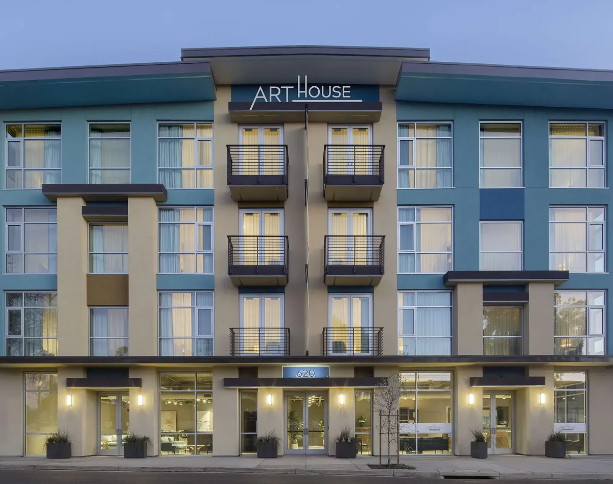

Many visitors to Santa Rosa never set foot in San Francisco's airports. The Charles M. Schulz Sonoma County Airport (STS), on the north side of Santa Rosa, is the only airport with scheduled passenger service to the North Bay, and its list of nonstop flights has grown this year. Here is what flies there, how to get downtown and what to know before you fly home.
Where is Sonoma County Airport?
STS is at 2200 Airport Boulevard, Santa Rosa, CA 95403, on the north side of the city. The terminal opens 90 minutes before the first flight of the day and closes 30 minutes after the last, and is open at least 7 a.m. to 10 p.m. daily.
Which airlines fly nonstop to STS?
As of the airport's passenger FAQ in October 2026:
- Alaska Airlines: Boise, Burbank, Las Vegas, Los Angeles, Orange County, Palm Springs (seasonal), Phoenix, Portland, San Diego and Seattle.
- American Airlines: Phoenix and Dallas/Fort Worth.
- Southwest Airlines: Denver, Burbank, San Diego and Las Vegas.
- Delta Air Lines: Salt Lake City.
Two changes stand out for 2026. Southwest began flying from STS on April 7, 2026, and Alaska added seasonal nonstops to Boise, Phoenix and Salt Lake City, with the first flights scheduled for November 1, 2026. Schedules vary by season, so check with the airline when you book.
Flying a carrier that does not serve STS? Landline runs a bus connection from STS to post-security SFO for American, Alaska, Hawaiian, JetBlue and United passengers.
Getting from the airport to downtown Santa Rosa
- Rental car: rental counters are in baggage claim. A car is the easiest way to reach the wineries.
- Pickup: the curbside pick-up and drop-off zone is in front of the terminal. Unattended vehicles are cited.
- Shuttle: Groome Transportation stops at the blue bus shelter in front of Costeaux, just south of the terminal.
- SMART train: the Sonoma County Airport station is on Airport Boulevard, about a mile from the terminal. Trains run south to the Santa Rosa Downtown station at 7 4th Street in Historic Railroad Square, on the west side of downtown.
- SMART Connect: to bridge that mile, the on-demand SMART Connect service runs seven days a week, 8 a.m. to 6 p.m., for $1.50 one way for adults. Book on the Ride Pingo app; airport riders board at the bus stop just south of the terminal.
Sonoma County Tourism notes that SMART fares are paid with a Clipper card or the SMART mobile app, and that adult fares range from $3.50 to $11.50 depending on distance.

Parking at STS
If you are flying out of Santa Rosa, these are the airport's rates effective July 1, 2026:
- Short Term Lot: $2 per 30 minutes, $28 daily maximum. The first 30 minutes are free.
- Long Term Lots A and B: $22 per day.
- Valet: $35 per day, by reservation only.
Parking is ticketless, with license plate readers, and reservations are recommended on weekends. The farthest space is under 300 yards from the terminal.
Flying home: timing and wine
The airport asks passengers to arrive 120 minutes before departure to check in and clear security. Airline counters open between 90 and 120 minutes before departure and close 30 to 45 minutes before, depending on the airline, and gates close 12 to 15 minutes before departure. Self check-in kiosks are for carry-on-only travelers.
Bringing wine home? The airport notes that Alaska and Southwest each let travelers check one case of wine free, with conditions, so read your airline's rules before you shop. Our wine country guide has ideas for where to fill that case.
Good to know
- STS: 2200 Airport Boulevard, on the north side of Santa Rosa.
- Nonstops on Alaska, American, Delta and Southwest, plus a Landline bus to SFO.
- New for 2026: Southwest service and Alaska's seasonal Boise, Phoenix and Salt Lake City flights.
- Arrive 120 minutes before departure.
Land in Santa Rosa, stay downtown
Flying into STS means less time on the freeway and more time in Sonoma County. Hotel E sits in a historic building on Old Courthouse Square, with continental breakfast, an evening happy hour and valet parking for your rental car. Art House Santa Rosa is a few blocks away on 7th Street. Both keep you close to downtown dining and an easy drive from the wineries.
Plan your stay downtown
Browse hotels, restaurants, wineries and attractions, all in one place.
Open the directory